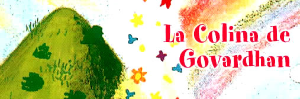
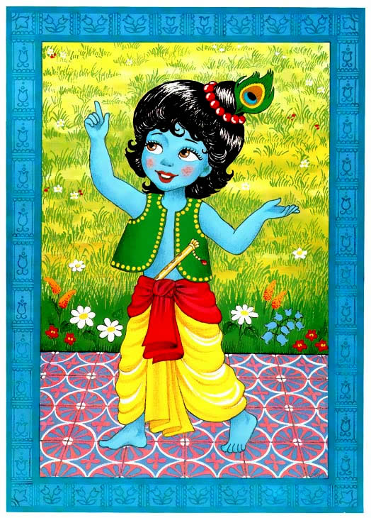

Gopal miro a la colina de Govardhan en donde las vacas estaban pastando y dijo: “Papi, no adoremos a Indra, adoremos a Govardhan.” ¿Que? Su padre rio. “¿Y eso como nos ayudara a que nuestro pueblo de Vrindavan prospere?”
“Bueno -dijo Gopal-, “Las vacas comen el pasto de esta colina, el cual es el mejor en todo Vraja; despues tomamos su leche, que es la mas rica; los rios riegan los arboles de donde comemos las frutas mas sabrosas y las abejas hacen la mejor miel de las flores de Govardhan. Papá, no crees que eso es todo lo que necesitamos?
Nanda Maharaj sonrio. “Si, mi niño, tienes razon, mañana haremos otro sacrificio para Govardhan. Ahora dejame terminar la ceremonia para Indra.